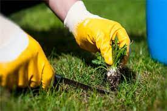
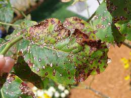
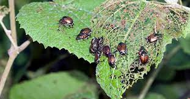
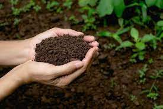

click here to know yours!!!
THE BEST WAY TO INCREASE YOUR YEILD
1.Weed And Pest Management
Effective weed control and pest management are crucial for maintaining the health and vitality of your garden or agricultural crops.We also offer environmentally friendly pest management strategies that protect your crops from harmful insects and diseases while minimizing the use of harmful chemicals. With our expertise, you can achieve a thriving and sustainable garden or farm, promoting both a healthy ecosystem and bountiful yields.
2.Plant Disease Prevention And Management
Plant disease prevention and management are essential aspects of maintaining the health and productivity of your garden, landscape, or agricultural operation. Our services are designed to help you proactively protect your plants from diseases and manage outbreaks effectively. We offer a range of strategies, from cultural practices to biological controls and, when necessary, carefully selected pesticides. By identifying potential disease risks early and implementing tailored management plans, we ensure your plants thrive while minimizing the impact of diseases.
3.Integrated Pest Management (IPM) Solutions
Our Integrated Pest Management (IPM) solutions are designed to provide a holistic and sustainable approach to pest control. We prioritize environmentally friendly methods that minimize the use of chemical pesticides while effectively managing pests. Our team of experts assesses your specific pest challenges and implements a tailored strategy that may include biological controls, habitat manipulation, and monitoring techniques. With a focus on long-term prevention, we aim to protect your plants and crops while preserving the balance of the ecosystem. Count on us for responsible and effective IPM solutions that promote the health and resilience of your green spaces and agricultural endeavors.
4.Crop Protection for a Bountiful Harvest

Crop protection is at the heart of ensuring a successful and abundant harvest. We understand the critical role that safeguarding your crops plays in agriculture. Our comprehensive crop protection solutions are designed to shield your plants from pests, diseases, and adverse environmental conditions. We offer a range of sustainable and tailored approaches, including pest scouting, disease monitoring, and the judicious use of crop protection products when necessary. Our goal is to help you achieve not only high yields but also a resilient and sustainable agricultural system. Partner with us to ensure the health and longevity of your crops, securing your investment and contributing to a thriving agricultural future.
5.Fertile Soil: The Foundation of Successful Agriculture
Healthy soil is the cornerstone of productive agriculture, and at [Your Company Name], we specialize in soil management and enhancement. Our soil experts work diligently to assess and improve the fertility and structure of your soil, ensuring optimal conditions for plant growth. Through soil testing, nutrient management, and sustainable practices, we help you unlock the full potential of your land while promoting long-term soil health. Whether you're a farmer, gardener, or land manager, we're committed to supporting your soil's vitality and, ultimately, your success. Join us in nurturing the very foundation of agriculture: the soil beneath your feet.
Benefits of CROPDOC
- Early Disease Detection
- Increased yield
- Improved Crop Quality
- Increased Profitability
- Food Security
Disease identification allows for the early detection of plant diseases. This early warning system enables farmers to take immediate action, preventing the spread of diseases and minimizing crop damage.
Predicting crop yields helps farmers optimize their farming practices. By adjusting planting, irrigation, fertilization, and pest control strategies based on yield predictions, farmers can maximize their harvests and overall productivity.
Disease identification and yield prediction can contribute to better crop quality. Farmers can adjust their practices to optimize factors like crop spacing, nutrient levels, and irrigation, resulting in higher-quality produce.
Ultimately, disease identification and yield prediction can lead to increased profitability for farmers. Maximizing yields while minimizing costs and risks is a formula for financial success in agriculture.
These technologies play a role in ensuring food security by helping farmers optimize production and reduce crop losses due to diseases and unpredictable factors.
CONTACT
Cropdoc Informatics S.A.&
21, Aristotelous str. — 54624 India
Tel: +30231028865416
E-mail: info@cropdoc.ac.in — Website: www.cropdoc.in
© Copyright 2022-2026